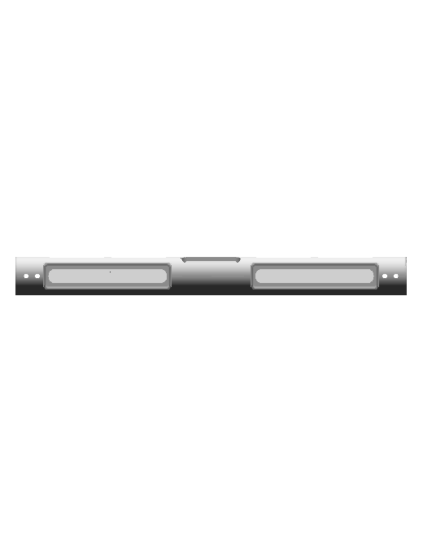
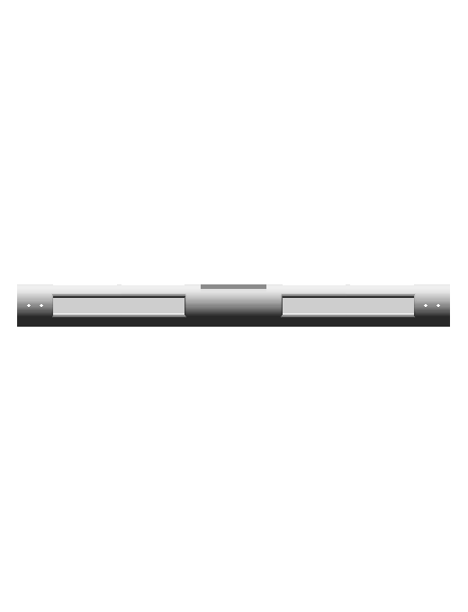
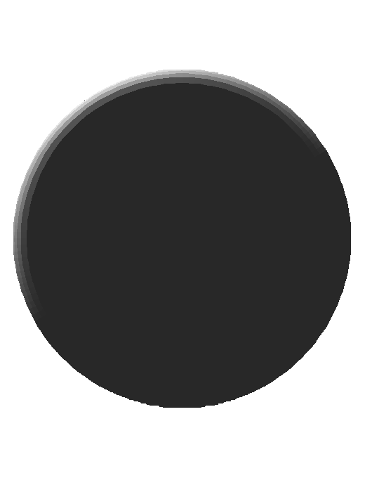
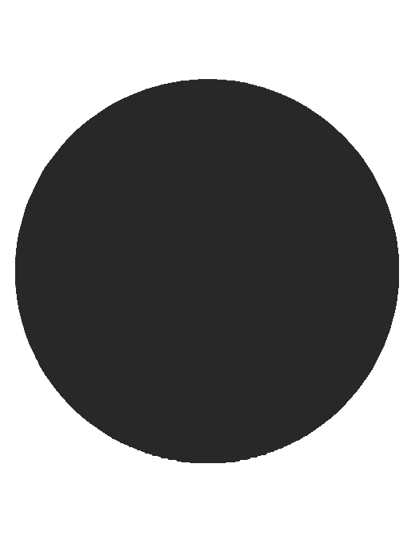

Native 520 × 50 mm cylindrical body with stepped grip profiles, nineteen contact identities and four independent through-bores.
Prior committed asset d0e4e95191e4a76822815bb4eeef3a32caa6fea0 and final native CAD, with corrected front/side/top viewing order. Cord generation and human app review are separate gates.
| Prior committed asset | Native CAD |
|---|---|
front | front |
side | side |
top | top |
The final solid is Joined_SeamBox_z0. Deliberately authored native YZ sketch sections preserve the shared stepped walls, with 2.5 mm native roundovers on twelve front lip edges. Contact surfaces are actual open native body surfaces; twenty contact nodes map to nineteen identities because the rounded tray has two regions. Eighteen native lip/floor witness pairs in depth-witnesses.json verify the maker depths without confusing a stepped wall bounding box with grip depth. The witnesses are tied to native parameters. Four independent bores are radius 2.5 mm, X −246, −231, 231, 246 mm; Y −25..25 mm, Z 0. Their measured native channel lengths are 50 mm each. Evidence shows exterior rear returns; no hidden U-channel is invented. Native half-space imprints retain the contact boundaries without adding solid material; one coplanar seam offset is 0.00001 mm to avoid a kernel degeneracy.